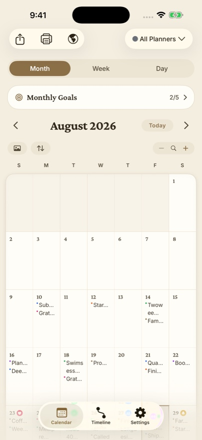

A lot of people are leaving Day One this year: the subscription keeps climbing, and the company has been through layoffs and a change of leadership. The good news is that your journal is portable. Day One exports everything as JSON or a ZIP, and several apps import that file. Here is what each serious alternative is best at, so you can pick by the reason you're leaving. Facts and prices checked October 26, 2026.
Quick picks
| If you want | Pick | Why |
|---|---|---|
| A journal that lives on a calendar | Dayleaf | Entries, photos, stickers and goals on month and week pages; buy once; free Day One import |
| Free and built in | Apple Journal | Comes with iOS, now on iPad and Mac too; no import |
| The closest Day One feel | Everlog | Indie Apple-only app with a well-liked Day One import |
| Every platform, including the web | Journey | iPhone, Android, Mac, Windows and a web app |
| Windows | Diarium | One-time license, strong on Windows and Android |
| Markdown and stats | Diarly | True Markdown, streaks, a photo map; subscription |
| Plain files you control forever | Obsidian | Free, local Markdown; Day One importer plugin |
| Mood in two taps | Daylio | Mood and activity log with charts; not a writing journal |
1. Dayleaf: best if you think in days, weeks and months

Dayleaf is a journal that lives on a calendar instead of a feed. Every entry, photo, sticker and goal sits on the day it happened, so a month view fills up like a paper planner and doubles as a habit tracker. It runs on iPhone, iPad, Mac, Apple Watch and Android, with twenty themes (each with a dark face), voice notes that turn into searchable text, an Apple Watch app that starts an entry with no taps, and On This Day.
- Day One import: free, from the JSON or ZIP export: entries, photos, videos and audio. Step-by-step guide.
- Price: free tier with unlimited entries, search and iCloud backup. Pro is $19.99 once for every Apple device, or $9.99 a year after a 7-day free trial.
- Not for you if: you need a web app or end-to-end encrypted journals. See our Dayleaf vs Day One comparison for the full trade-offs.
2. Apple Journal: best free option on Apple devices
Apple's own journal comes with iOS and, since iOS 26, runs on iPad and Mac too. It suggests moments from your photos, workouts and places, encrypts your journal end to end in iCloud, and costs nothing. The catch for Day One users: there is no built-in import (people rely on a community Shortcut), the calendar is only a date picker, and export is HTML or PDF. Dayleaf vs Apple Journal.
3. Everlog: best like-for-like Day One replacement
Everlog is an independent Apple-only journal whose Day One import gets consistently good reviews from people who switched. It keeps entries in your own iCloud, exports Markdown with media, and sells a lifetime license. Switchers mention that the Mac app can feel slow with very large journals.
4. Journey: best for using every platform
Journey runs on iPhone, Android, Mac, Windows, Linux and the web, and even takes entries from WhatsApp and email, which makes it the safest pick if you write from a browser or switch between ecosystems. It adds guided coach programs, mood tracking and a map. Membership is $49.99 a year (lifetime $199). Dayleaf vs Journey.
5. Diarium: best for Windows
Diarium is a one-developer app sold as a one-time license per platform ($14.99 each on iPhone, Mac and Android, $19.99 on Windows), with an award-winning Windows app. It can pull the day's calendar events, weather and health data into an entry, imports from Day One and many other apps, and is updated often. Dayleaf vs Diarium.
6. Diarly: best for Markdown and statistics
Diarly writes in real Markdown, has the best stats page of the group (streaks and totals), mood tracking that writes to Apple Health, and a map of entries. It imports Day One and many other apps and can encrypt entry text. Apple only, and Premium is subscription only ($24.99 to $29.99 a year). Dayleaf vs Diarly.
7. Obsidian: best for owning plain files
Obsidian is a free Markdown notes app, not a journal, but many people keep a daily-notes journal in it because the files are theirs forever. A community plugin imports Day One with photos, tags and locations. It is powerful and less pleasant to write in than a dedicated journal.
8. Daylio: best for tracking mood in seconds
Daylio is a micro-diary rather than a journal: pick a mood and a few activities in two taps, and it turns your days into charts and a Year in Pixels. It is huge on Android, has no Mac or Watch app, and is not designed for several devices at once. Premium is $35.99 a year. Dayleaf vs Daylio.
How to switch without losing anything
- In Day One, open Settings, Export, and choose JSON: it keeps entries, photos, videos and audio in one ZIP.
- Keep Day One installed and import the export into the app you're trying.
- Live with both for a couple of weeks before you cancel anything.
FAQ
What is the best Day One alternative in 2026?
It depends on why you are leaving. For a calendar-first journal you buy once, with free Day One import on iPhone, iPad, Mac, Apple Watch and Android, Dayleaf. For a free journal built into iOS, Apple Journal. For Windows, Diarium. For the widest platform list including the web, Journey. For plain Markdown files you fully control, Obsidian.
Which Day One alternative imports my Day One journal?
Dayleaf imports the Day One JSON or ZIP export for free, including entries, photos, videos and audio. Everlog, Diarly and Diarium also import Day One. Obsidian has a community Day One importer plugin. Apple Journal has no built-in import.
Is there a Day One alternative without a subscription?
Yes. Dayleaf Pro is a one-time $19.99 purchase that covers iPhone, iPad, Mac and Apple Watch, and the free tier has unlimited entries. Diarium and Everlog also sell one-time licenses, Apple Journal and Obsidian are free.
Is there a Day One alternative for Android?
Dayleaf, Journey and Diarium all run on Android. Dayleaf's Android app imports the same Day One export as the iPhone app.